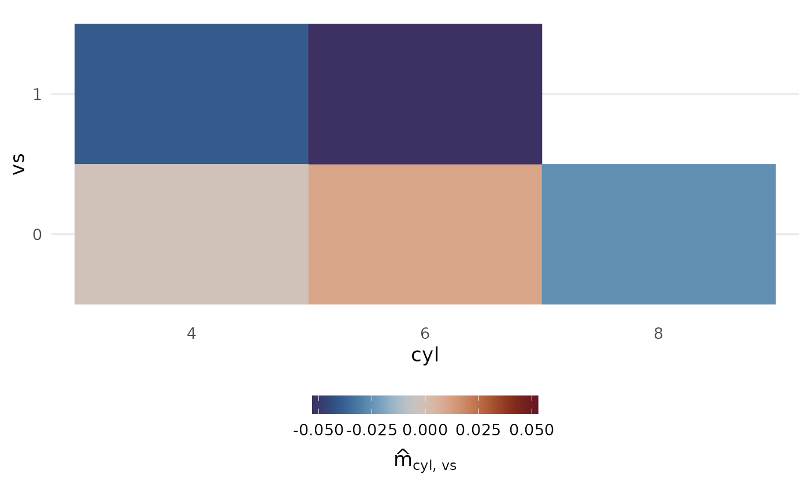

Plot Prediction Components
Source:R/autoplot.R, R/plot_main_effect.R, R/plot_threeway_effects.R, and 1 more
plot_components.RdPlotting the main effects among the prediction components is effectively identical to a partial dependence plot, centered to 0.
Usage
# S3 method for class 'glex'
autoplot(object, predictors, ...)
plot_main_effect(object, predictor, rug_sides = "b", ...)
plot_threeway_effects(object, predictors, rug_sides = "b", ...)
plot_twoway_effects(object, predictors, rug_sides = "b", ...)Arguments
- object
Object of class
glex.- ...
Used for future expansion.
- predictor, predictors
(character)vector of predictor names, e.g."x1"to plot main effect ofx1, andc("x1", "x2")to plot the interaction termx1:x2.- rug_sides
(character(1): "b")Sides to plot rug (seeggplot2::geom_rug()) plot on for continuous predictors.. Default is"b"for both sides. Set to"none"to disable rug plot.
See also
Other Visualization functions:
autoplot.glex_vi(),
glex_explain(),
plot_pdp()
Examples
if (requireNamespace("randomPlantedForest", quietly = TRUE)) {
library(randomPlantedForest)
# introduce factor variables to show categorical feature handling
mtcars$cyl <- factor(mtcars$cyl)
mtcars$vs <- factor(mtcars$vs)
# Fit forest, get components
set.seed(12)
rpfit <- rpf(mpg ~ cyl + wt + hp + drat + vs, data = mtcars, ntrees = 25, max_interaction = 3)
components <- glex(rpfit, mtcars)
# Main effects ----
plot_main_effect(components, "wt")
plot_main_effect(components, "cyl")
}
# plot_threeway_effects(components, c("hr", "temp", "workingday"))
if (requireNamespace("randomPlantedForest", quietly = TRUE)) {
library(randomPlantedForest)
# 2-degree interaction effects ----
# 2d continuous, scatterplot of arbitrary orientation
plot_twoway_effects(components, c("wt", "drat"))
# flipped: plot_twoway_effects(components, c("drat", "wt"))
# continuous + categorical (forces continuous on x axis, colors by categorical)
plot_twoway_effects(components, c("wt", "cyl"))
# identical: plot_twoway_effects(components, c("cyl", "wt"))
# 2d categorical, heatmap of arbitrary orientation
plot_twoway_effects(components, c("vs", "cyl"))
plot_twoway_effects(components, c("cyl", "vs"))
}
